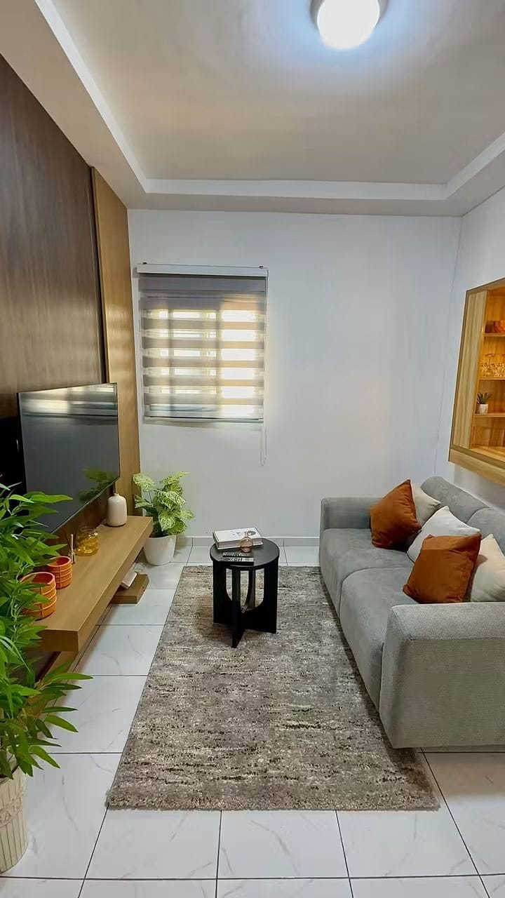

Les Résidences Merryke 3 · Angré, Nouveau CHU
Visitez l'appartement pièce par pièce avant d'y poser vos valises : le séjour, la cuisine, la chambre et le balcon.

Faites défiler pour entrer ↓
Fin de la visite
Non loin de l'école internationale Les Graines du Savoir. Un quartier calme et accessible.
Planche de direction artistique · Piste C
Greige#ECE8E2 · fond
Craie#F7F5F1
Charbon#22201D
Bois#B98A55 · le comptoir
Expérience
Les photos de Merryke 3 sont verticales et soignées : le site les met en scène comme une visite. Au défilement, chaque pièce s'ouvre comme une porte dans la précédente (masque arrondi qui s'élargit, zoom avant), pendant qu'un plan d'itinéraire avance : séjour, comptoir bar, cuisine, chambre, chambre le soir, balcon. Sur mobile, la visite est plein écran, comme une vidéo, avec des barres de progression en haut.
On finit sur la liste des équipements et une carte de réservation qui reste visible. Typographies : Libre Caslon Display (titres) et Public Sans (textes).
Maquette · Piste C · VisiteToutes les pistes